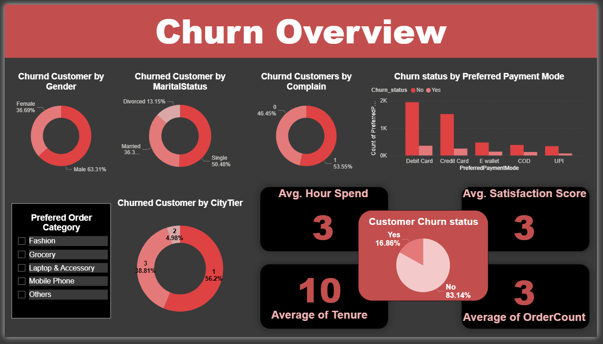
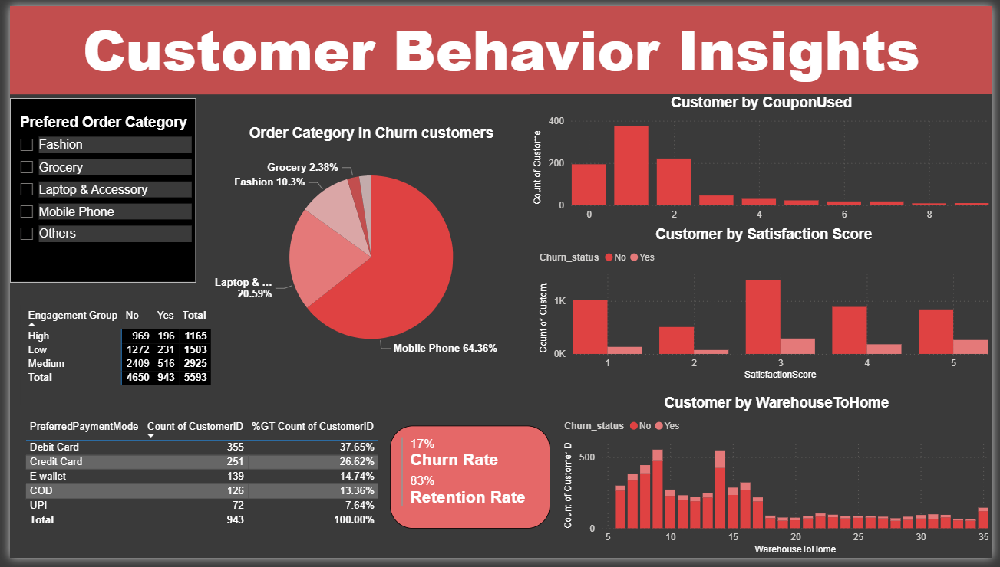

Customer Churn Analysis
Every month, your e-commerce platform is quietly bleeding customers. Most businesses don't even know why.
1 in 6 customers is gone. Every single month. They don't send a complaint. They don't ask for a refund. They just stop buying and silently move to a competitor. This project was built to find exactly who is leaving, why they are leaving, and what a business can do to stop it before it costs any more revenue.
See the analysis
This is Power BI dashboard built across two pages covering Churn Overview and Customer Behavior Insights. See exactly which customers are at risk, which segments are most vulnerable, and what is driving them away.

Churn Overview - Power BI Dashboard

Customer Behavior Insights - Power BI Dashboard

SQL Queries - PostgreSQL

Python - EDA & Data Cleaning
What problem does this solve?
Acquiring a new customer costs 5 times more than keeping one. Yet most e-commerce businesses pour their budget into ads and acquisition, while completely ignoring the customers who are quietly walking out the back door.
Out of 5,593 customers analysed, 943 chose to leave. That is a 17% churn rate. A 1 in 6 loss. And the most painful part? These customers averaged just 4 months with the platform before giving up compared to 11 months for those who stayed.
The platform knew something was wrong. 53.55% of churned customers had already raised a complaint. The warning signs were there. The data just needed someone to read them.
This is not a customer service problem. It is an intelligence problem. And this project was built to solve it from raw data all the way to business strategy.
Here is my process
- Data collection and understanding - Raw CSV with 5,593 customer records and 19+ behavioral features including tenure, complaints, delivery time, payment mode, and satisfaction score
- Data cleaning with Python - Null values imputed, duplicates removed, category labels standardised, and outliers capped using Pandas, NumPy, Seaborn, and Matplotlib
- Exploratory data analysis - Univariate and bivariate analysis to uncover relationships between churn and tenure, complaints, delivery time, satisfaction score, and coupon usage
- SQL business queries with PostgreSQL - Cleaned data loaded into PostgreSQL. 15+ targeted business questions answered covering churn by city tier, gender, engagement level, and high-risk customer identification
- Visualization and insights with Power BI - Interactive dashboards built using DAX measures to surface churn trends, behavioral segmentation, and retention signals across all customer dimensions
What the data revealed
- 1 in 6 customers is leaving every month - 943 out of 5,593 customers churned. At a 17% churn rate, the business is losing a significant portion of its customer base before ever understanding why
- 53.55% of churned customers had already complained - The platform had warning signs and did not act in time. An unresolved complaint is not just a bad experience, it is a countdown timer on that customer's account
- Churned customers lasted only 4 months vs 11 for retained - The gap in tenure is enormous. Customers who stayed were more than twice as loyal in time. Churn is happening far too early in the customer lifecycle
- 56.2% of all churn comes from Tier 1 cities - The most valuable market is losing customers the fastest. These are high-spending customers in premium locations and they are the ones going to competitors
- Mobile Phone buyers show 27.29% churn rate - The highest-volume category is also the highest-risk. These buyers make the most orders but need better post-purchase support to stay beyond the first transaction
- Satisfaction score of just 3 out of 5 across churned customers - Mediocre. And in e-commerce, mediocre means churn. A satisfaction score this low is not a warning, it is a prediction
Built with
- Python - Data cleaning, EDA, outlier treatment, and visual exploration using Pandas, NumPy, Seaborn, and Matplotlib
- PostgreSQL - Data storage and 15+ targeted SQL business queries using Window Functions, CASE statements, CTEs, and NTILE segmentation
- Power BI - Two-page interactive dashboard with DAX measures covering churn overview and customer behavior insights
- Business Insight Reporting - Translated behavioral data into a 5-step retention strategy that a business can act on this quarter